“U-Design” Premium WordPress Theme Documentation for version 2.4.6
Created By: Andon
Email: ThemeForest profile page
For more information please refer to the license included with the theme or Licensing Terms on the ThemeForest site.
Table of Contents
- Installing the Theme
- Recommended Plugins (Plugins Update Instructions)
- Front Page
- Front Page Sliders
- General Options
- Portfolio Section
- Blog/News Section
- Contact Page
- CSS Files and Structure
- Additional Information
- PSD Files
- Font Settings & Custom Colors
- List of All Custom Fields Available with the Theme
- Responsive Layout
- WooCommerce Integration with U-Design
- Sources and Credits
A) Installation - top
To install the U-Design Theme you will need WordPress v3.0 or newer.
IMPORTANT: Make sure you unzip the downloaded file from ThemeForest first (do not try to install or upload this file to your server). In the contents of this file you will find the actual theme zip file called "u-design.zip". This is the file you're going to be using to install the theme in your WordPress.
Now, to install the theme choose one of the two methods:
- Method 1 - Upload the u-design.zip file through the WordPress admin backend (This will ONLY work if the server that hosts your website allows upload limits greater than 6 MB. Please note, most hosting providers have only up to 2MB file upload limit):
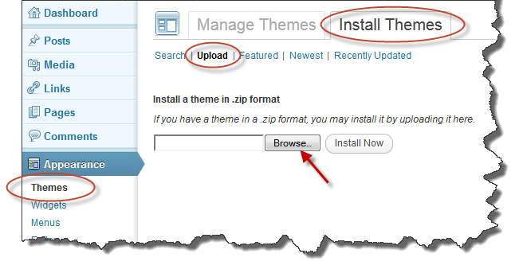
Then, when prompted activate the theme:
Note: If you can't get passed the file upload limit and/or if you get an error message mentioning exhausted memory size or something in those lines, you could try to increase that limit by adding to the "wp-config.php" the following line of code:
define('WP_MEMORY_LIMIT', '64M');If that doesn't make any difference, contact technical support at your hosting provider and they should be able to assist you with increasing the file upload memory limit.
- Method 2 (FTP) - Unzip the u-design.zip and upload the extracted u-design/ folder to <wordpress install directory>/wp-content/themes/ with your favorite FTP client so that the structure looks like:/wp-content/themes/u-design/.
Once the upload is complete go to the WordPress administrator backend and activate the theme (the theme should appear now under Appearance --> Themes)
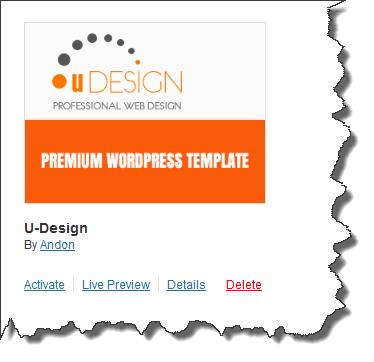
The theme's options page should appear now near the bottom of the sidebar under the name: U-Design Options:
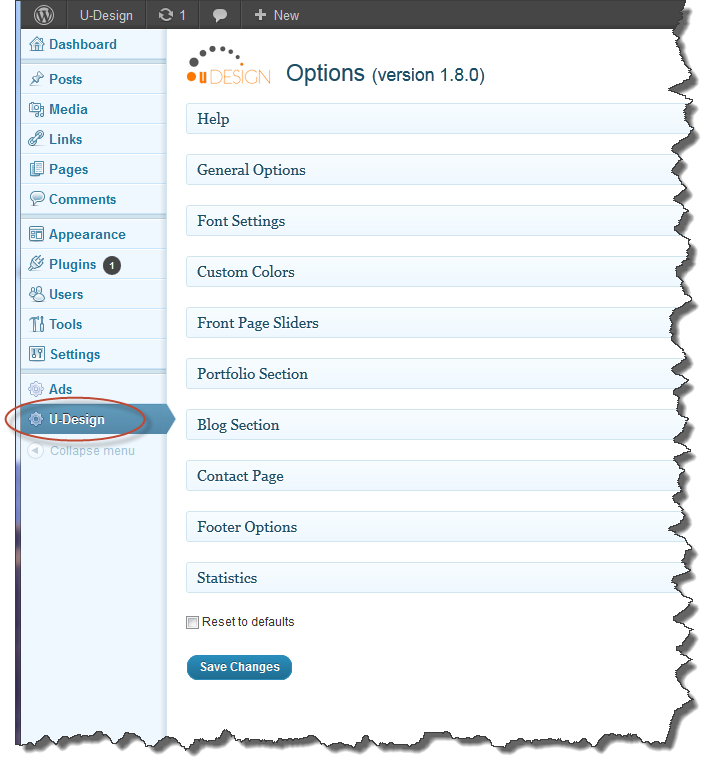
IMPORTANT: Once you've installed the theme successfully you will need to install some plugins (please refer to the next section: Recommended Plugins) necessary to get the most functionality for the theme.
B) Recommended Plugins - top
The U-Design theme has been prepared to work with a few additional plugins to enhance its functionality. Once you install the theme you should see a yellow box on top letting you know of the plugins "required" and "recommended" to be installed for the theme. Click on the "Begin installing plugins" link:

At the next page hover over a plugin to get the "Install" link to install individual plugins:
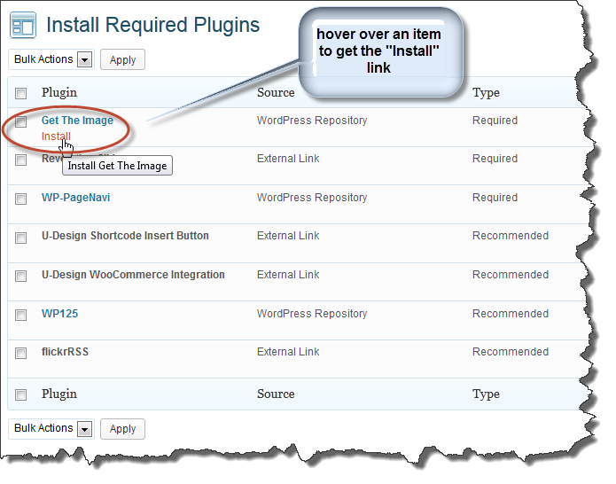
Alternatively, you could install the plugins in bulk as well.
If you clicked on the "Dismiss this notice" link to remove the yellow box:
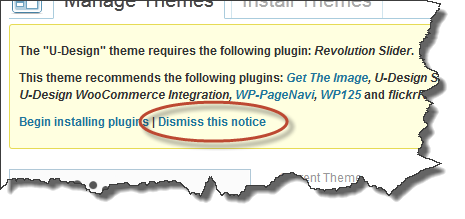
and would like to install the necessary plugins for the theme at a later time, you could access the plugins' install page from the Appearance → Install Plugins menu: (please note, this link will only list the plugins for the "U-design" theme)
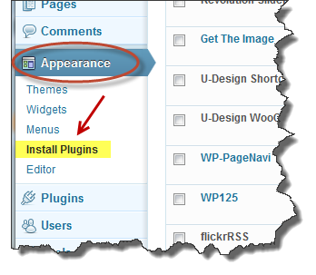
Required Plugins Info:
- Get the Image - This plugin is required by the theme for internal use, once activated you don't need to do anything with it. It is used for the purpose of obtaining images for thumbnails, feature images, etc.
- WP-PageNavi - This plugin provides the pagination for pages.
- Revolution Slider Plugin - This plugin is included with the theme and provides the Revolution slider required by the "U-Design" theme.
Recommended/Optional Plugins Info:
- Visual Composer: Page Builder for WordPress The WPBakery Visual Composer plugin offered by the "U-Design" theme is a Drag-and-Drop Frontend and Backend Page Builder Plugin for WordPress that will save you tons of time working on the site content. You will be able to take full control over your WordPress site, build any layout you can imagine – no programming knowledge required. Moreover, now you can choose either work on a backend or move your page building process to frontend and instantly see changes you make. Once you install and activate the plugin you may access its settings page in Settings → Visual Composer and by default when you go to edit a page you'll now see the Visual Composer buttons immediately above the page editor. More about this plugin could be found HERE and available Documentation. For support, please post your questions at the theme's Support Forum. You should be able to register yourself with the Support Forum HERE.
Please note, this is an optional plugin, which means you can setup your WordPress site without it, simply by using the "U-Design" themes' core features and shortcodes, it's not required by the theme to work properly. We could provide assistance with understanding some of its features, however, bugs and more serious issues with the plugin will ultimately be addressed by the plugin's author in consequent updates. In that respect we'll be providing updates of the plugin (whenever available) with every future release of the "U-Design" theme. - U-Design Shortcode Insert Button This plugin improves the user experience by adding a button to the Post/Page editor allowing for the easy insertion of ANY U-Design Shortcode straight from the editor UI.
- U-Design - WooCommerce Integration This plugin ensures the smooth integration of the "U-Design" theme with "WooCommerce eCommerce WordPress" plugin. For more information please refer to the WooCommerce Integration with U-Design section.
- Envato WordPress Toolkit - This plugin allows for easy backup and updates of the "U-Design" theme directly from within WordPress admin area.
- flickrRSS - This plugin allows you to display Flickr photos on your WP Blog. It supports user, set, favorite, group and community photostreams, and is relatively easy to setup and configure via a settings panel. I have included a customized version of the "flickrRSS" plugin. Once the plugin has been installed and activated you should be able to find a new FlickrRSS Widget under Widgets. Also, you can configure your Flickr account through Settings-> FlickrRSS:
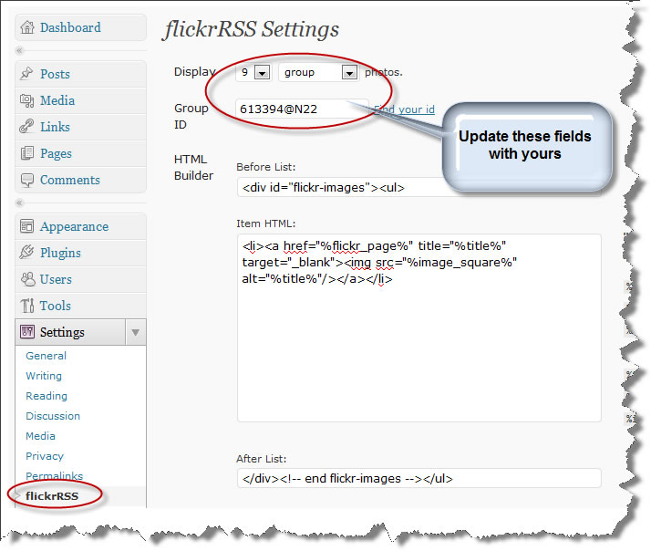
- WP125 - Easy management of 125x125 ads on your blog. Ads can be run for a specified number of days, and will automatically be taken down. Track clicks too. Here's what the Manage screen looks like in the backend:
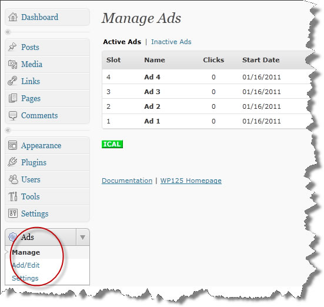
- WP-CommentNavi - This plugin provides pagination for comments.
Plugins Update Instructions:
- Revolution Slider UPDATE Instructions
- For the 'WPBakery Visual Composer' plugin to be updated, do the following after you have updated the theme to the latest version:
1 ) Go to the WordPress admin area "Plugins" page
2 ) Deactivate the 'WPBakery Visual Composer' plugin there
3 ) Delete it
4 ) Now go to Appearance → Install Plugins page
5 ) Install it again from there - For the 'U-Design Shortcode Insert Button' plugin to be updated, do the following after you have updated the theme to the latest version:
1 ) Go to the WordPress admin area "Plugins" page
2 ) Deactivate the 'U-Design Shortcode Insert Button' plugin there
3 ) Delete it
4 ) Now go to Appearance → Install Plugins page
5 ) Install it again from there - For the 'U-Design - WooCommerce Integration' plugin to be updated, do the following after you have updated the theme to the latest version:
1 ) Go to the WordPress admin area "Plugins" page
2 ) Deactivate the 'U-Design - WooCommerce Integration' plugin there
3 ) Delete it
4 ) Now go to Appearance → Install Plugins page
5 ) Install it again from there - For the following plugins:
- 'Envato WordPress Toolkit'
- 'Get the Image'
- 'WP-PageNavi'
- 'flickrRSS'
- 'WP125'
- 'WP-CommentNavi'
since they are included from the WordPress Plugin Repository, you can easily update them using the built in WordPress interface from the Plugins page.
C) Front Page - top
Without any content the Front Page will only display the default slider and the footer.
The Home page can be set up in one of two ways:
- Widgetized Home Page (default): Settings → Reading → Front page displays and select "Your latest posts":
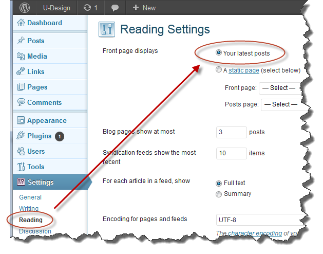
- Static page as Home Page: Go to Settings → Reading → A static page (select below) → Front page: → Choose your page from the dropdown menu.
For example, if you would like to set up your "Blog" page as Home page do the following:

PLEASE NOTE: When working with Option 2 above, make sure to leave the "Post Page:" option at "--Select--" for the Blog section to work properly.
The first method (Widgetized Home Page) is the one that gives you the most flexibility because the home page consists of Widget Areas that can be used and combined in various ways, here's a map (the Widget Areas are marked in darker gray):
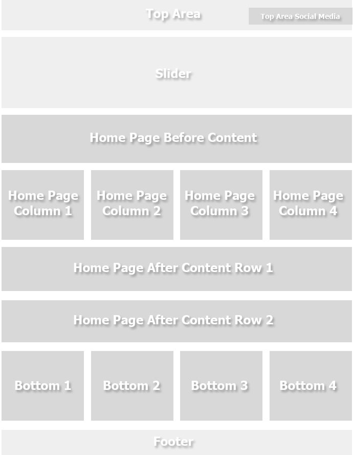
For various theme widths please refer to the Additional Information section.
To get some content into the Widget Areas go the WordPress admin backend Appearance --> Widgets and drag-and-drop widgets to the Widget Areas associated with the Front Page. Those are:
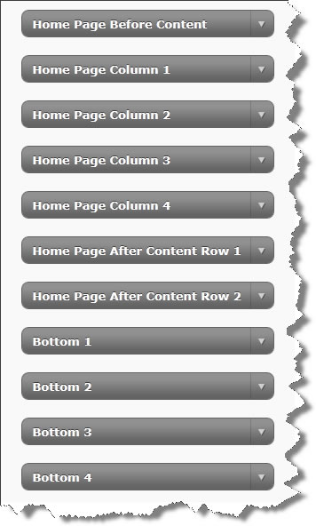
For example, drag-and-drop a "Text" widget into one of the Widget Areas, insert some text into it, save it, then go to the home page (front end) and refresh it to reflect the changes. The above listed widget areas will automatically resize to extend the full width of the page. Only the "Home Page Column 1" has the option to stay fixed width. You could set that under the U-Design -> General Options -> Home Page Column 1. By default fixed width for "Home Page Column 1" widget area is disabled. The idea behind this options is that in some cases you might want to have this widget area to serve as a left sidebar on the home page, or display the latest posts in it, etc. and use the remaining space for wider content, I'm sure you could put your creativity to good use here. :)
For instance, the "Home Page Before Content" widget area in the theme's demo site has been built with a "Text" widget (the title fiend was left blank), and I used some inline styling (inline CSS) to get the look I wanted.
Note: You can have the code I used for the 7 Home Page examples you see in the theme's demo site, for that go to Get the Code page and follow the instructions there.
D) Front Page Sliders - top
The U-Design theme comes with seven sliders: Flashmo (Flash based), Piecemaker (Flash based), Piecemaker 2 (Flash based), Cycle 1 (full width image), Cycle 2 (smaller image with text and button), Cycle 3 (three layers of sliding images and text) and Revolution Slider (which is a layers based slider). The sliders could be configured from the theme's options page, for that go to U-Design Options --> Front Page Sliders.
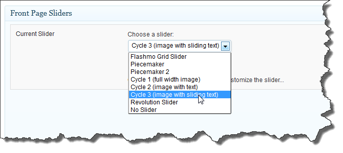
Please Note: Slider image dimensions are very specific, please review (see below) the requirements for the Slider you have chosen and crop the image to the EXACT specifications indicated.
If you are uploading the image using the WordPress Image Uploader, please make sure "Size: Full Size" is indicated:
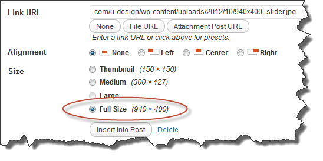
- Flashmo Grid Slider - top
Most of the settings are self explanatory from the options page, feel free to try out various combination of Flashmo Grid Slider settings to get the desired slicing and transition effects. For best results size your images 940 x 400px. You can configure transition effects for each slide individually:
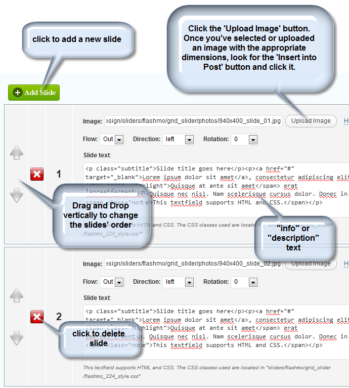
- Piecemaker Slider - top
Most of the settings are self explanatory from the options page, feel free to try out various combination of piecemaker settings to get the desired slicing and transition effects. For best results size your images 940 x 360px. Make sure that the images you upload and assign to the slider exactly match the width and height specified under the piecemaker's settings, that also means that all images should be the same dimensions. Use the "Upload Image" button for each slide to upload your images.
Please note: Make sure, after you save the slider changes, that you clear the cache and "hard" refresh the page in your browser to be able to see the changes right away. Also, don't forget if you have any Caching WordPress plugins installed to also either clear their cache or disabled them while testing.
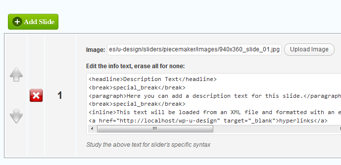
The Info or Description text uses a special formal for formatting text. The default text should serve you as a good example as to how to create paragraphs, line breaks and links. You format the info text to full extent with the "piecemakerCSS.css" file located under <themes-directory>/u-design/sliders/piecemaker/. - Piecemaker 2 Slider - top
Most of the general slider settings are self explanatory from the options page, feel free to try out various combination of piecemaker settings. For best results size your images 940 x 360px. The Piecemaker 2 slider compared to the Piecmaker slider allows for the addition of not only images but also Flash and Video. What is important to understand that the Flash files supported have to be SWF files. The SWF files must be ActionScript 3 and Flash CS4 or above to work with the native Flash 3D engine. Make sure to use the WordPress Media Manager to upload the files.
According to the Piecemaker 2 documentation the accepted file formats for Video are MPEG4 width H.264 Codec, as well as F4V and FLV. Inserting a YouTube or Vimeo link will not work, you will have to save the actual file as one of the above supported formats and then upload it to your site, reference the link to that file and that should do the trick. Make sure to use the WordPress Media Manager to upload the files.
The Slide Text can hold a description text, which can be formatted with simple HTML tags. Which HTML tags are supported, is determined by the piecemaker.css file. Per default you can use <h2>, <h2>, <p>, <p-italic>, <a>. But you can add and specify as many tags as you want, for example different headline types. If you want to use different fonts, you will have to make sure that you embed these fonts in the Flash file. If you don't add any text to the Slide Text field, no info text appears.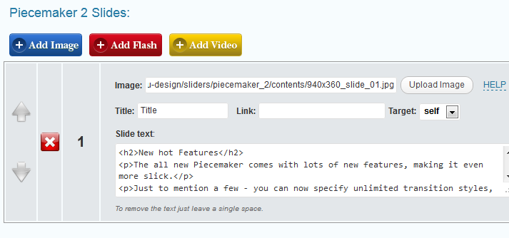
Transitions: You can add as many transitions to the Piecemaker 2 as you want. These transitions will be started in the order they are specified below. This order is entirely independent from the order of the slides above. Once the last transition is reached, it starts over again with the first transition. Please refer to the Piecemaker 2 Options page in the theme's backend where you will find more information on how the transitions work. You can drag-and-drop transitions to arrange their position as well as add new ones and delete them: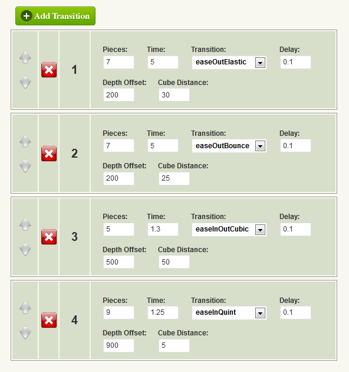
- Cycle 1 Slider - top
With the Cycle 1 slider you can use the automatic image uploader or you could specify a URL or path to your images. Either way it should be fine. Slide image dimensions: with frame enabled (default state) image dimensions are 914px by 374px (width by height). Without the frame image dimensions are 940px by 400px. Depending on which option is selected, create and upload images with the corresponding dimensions for optimal quality.
- Cycle 2 Slider - top
The image size is FIXED to 476px by 287px (width x height). If you use a larger image then anything outside 476px by 287px area will not be visible. In the slide text field you could use plain text or some html, I have also made sure that you could use the typography list styles included with the theme (see theme's typography). The button will only display if a link is inserted in the Link field and the link will be automatically applied to the button. You can also choose from 'light' and 'dark' button styles.
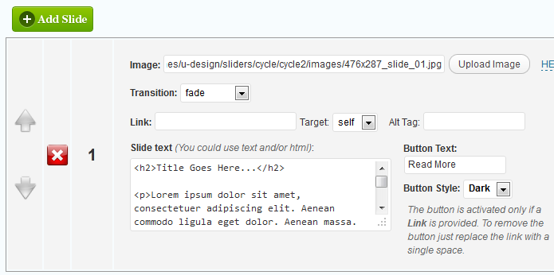
- Cycle 3 Slider - top
The image size is FIXED to 940px by 430px (width x height). I have provided the PSD templates for your convenience to use to generate the slider images. The first one is a jpeg, this image is the base, it kind of serves as the background image against which the second image and text will slide over. The second image is a transparent png which is meant to slide over the first image either with some text or some smaller graphic but you need to maintain the transparency and try not to cover the entire first image with the second one's graphics to get the desired effect. The "Slide text" field is for the third component (the sliding text). The canvas area for the text is also 940px by 430px, the only difference now is that you have to manipulate the text block with HTML. I have provided as many inline CSS properties as I can think of to give you a great start in being able to manipulate the text block yourself, feel free to experiment with those properties. And if at any time you need the default text, you can simply create a new slide and it will come with the default text for your reference:
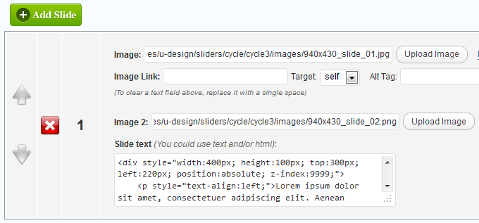
- Revolution Slider - top
The Revolution Slider plugin comes with the theme, you just need to install and activate it. For that do the following:
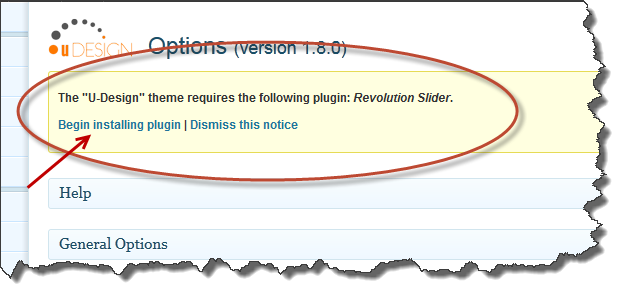
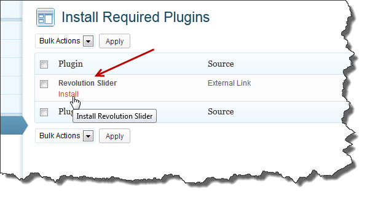
For more information on required plugins and installation instructions, please refer to the Recommended Plugins section.
To assign the Revolution Slider with "U-Design" theme, select it from the menu:
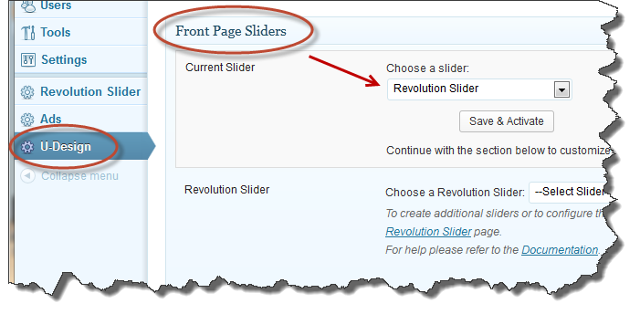
To create your slides and setup everything about the Revolution Slider you need to go this section:
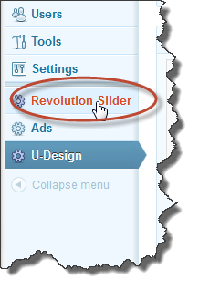
For further instructions and additional information on how to setup your slider, please refer to the Revolution Slider's own documentation HERE and its description page on CodeCanyon. For support, please post your questions at the theme's Support Forum. You should be able to register yourself with the Support Forum HERE.
Revolution slider UPDATE Instructions:- The Revolution slider plugin can easily be updated, for that press the "Update Plugin" green button in the bottom right corner of the Revolution Slider settings page:
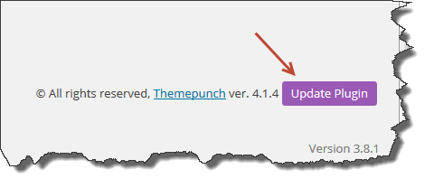
You will find the
revslider.ziplocated in the theme's folder:u-design/lib/plugins/
Although this method should not overwrite your custom styles and settings within the slider it is always a good idea to backup it up first just in in case. - Alternatively, to update the Revolution slider, you could use the method described in this tutorial.
How to add Revolution slider to a page or a post:
If you would like to insert an instance of the slider on top of any page or Post that can span the full width of the browser window and not be limited by the content width, you can do that by specifying a custom field for that page or post paired with a shortcode of the slider you want to use. For more information on the specific custom field that you need to use in this case please refer to the Slider related custom fields. - The Revolution slider plugin can easily be updated, for that press the "Update Plugin" green button in the bottom right corner of the Revolution Slider settings page:
E) General Options - top
"A Picture's worth a thousand words...":
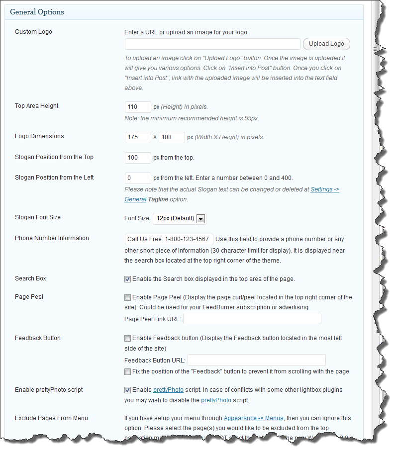
Custom Logos: Using the "Top Area Height" setting you can resize the top area of the site to accommodate your custom logo size. Depending on your logo, you might have to nudge the slogan position a bit to fit perfectly with the logo. Use the Slogan Position fields for that.
Logo Dimensions: Just a quick note about the Logo width and height. What is important to understand is that by specifying the width and height of the logo, you will not stretch/zoom or enlarge/shrink your logo, the two settings are used to define the logo link click-able area. Generally those should match your actual logo image width and height. In some cases if you need to lower the logo a bit from the top, you can do that be giving a greater value for the height.
F) Portfolio Section - top
A good place to start with setting up a portfolio section(s) is the video tutorials:
U-Design Portfolio Section Setup Part 1 of 2
U-Design Portfolio Section Setup Part 2 of 2
You may find discussions around this subject in the theme's support forum HERE. You can create your account in this page.
Note: Sortable Portfolios are not discussed in the videos above, however, the concept of settings them up is the same, there's also more information on Sortable Portfolios further down in this section.
To setup Portfolio Section(s), start with creating a new page, e.g. Portfolio, or Videos. You can call it anything you like. As you have the page open for editing, choose one of the available portfolio templates as shown below:
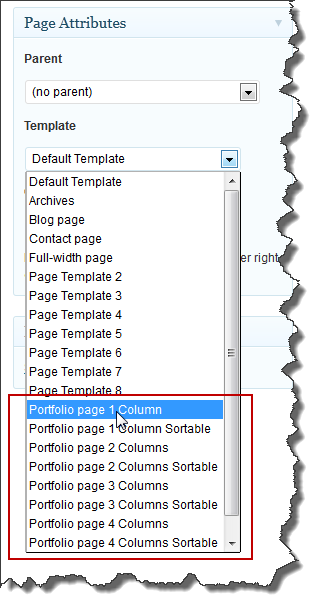
Save the page(s) and go to U-Design --> Portfolio Section and follow the instructions there:
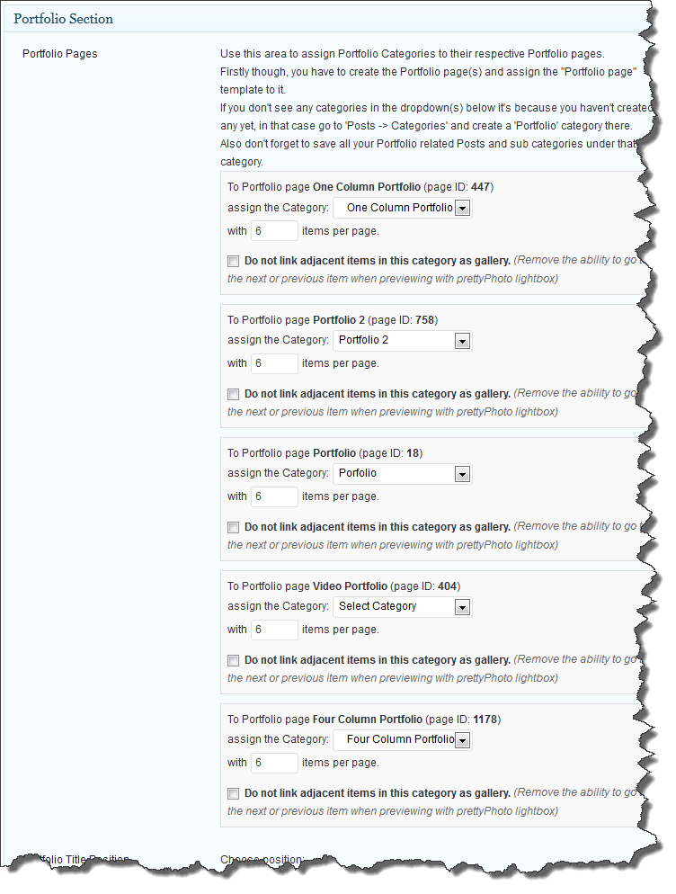
Before you get the page above you should setup your Portfolio categories make sure that they are not empty, each category needs to have at least one Post assigned to it, WordPress will hide a category if it's empty, that's why it's important to have at least one Post assigned a category. Then you can come to the Portfolio section shown above and as described in the image above, you need to associate a page with a category.
At this point you're almost done, the last thing would be to setup the Portfolio thumbnails. There are several ways to accomplish that.
One and easiest would be to use the "Get The Image" Plugin. This plugin will greatly simplify the task of grabbing the thumbnail images for your Portfolio items.
It was designed to make the process of things such as adding thumbnails, feature images, and/or other images to your blog much easier, but it's so much more than that.
- Unzip the file.
- Upload get-the-image.php file to your wp-content/plugins folder.
- Activate the plugin on your Plugins page.
- Looks for an image by custom field.
- If no image is added by custom field, check for a post image (WordPresss 2.9+ feature).
- If no image is found, it grabs an image attached to your post.
- If no image is attached, it can extract an image from your post content.
- If no image is found at this point, it will display a default image "Not Available".
If you prefer to use the custom field method add a new custom field named: portfolio_item_thumb. In the Value field, you’ll need to add the URL path to the image. Example: http://www.yousite.com/wp-content/uploads/2011/01/image-file-name.jpg
For the Preview image or video or flash of your portfolio item you can use a custom field portfolio_item_preview. Here's a full list of the available Portfolio section custom fields:
- portfolio_item_thumb (this is the item's thumbnail image)
- portfolio_item_preview (this is the item preview - it could be an image, video or a flash file)
- portfolio_item_description (this is the item description text)
- portfolio_item_preview_title (this is the item capture text shown underneath the preview item)
- portfolio_item_link (which allows to link directly from the thumbnail to another page or site rather than displaying a preview image)
- portfolio_item_link_target (use this custom field to open the link in a new window, for that set the value field to "_blank" without the quotes)
- portfolio_item_link_rel (use this custom field to specify a link relation attribute "rel" for Portfolio thumbnails, example value: "nofollow" without the quotes)
- portfolio_item_image_attachments (use this option to pull all the images attached to a single post to the Portfolio, example value: 'yes' without the quotes)
- portfolio_item_offset_image_attachments (use this to skip the number specified of image attachments, example value: '0' or '1' without the quotes)
- portfolio_filter_category - Sortable Portfolio Only (adds the ability to sort by "child" category, possible values: '0' or '1' without the quotes)
- portfolio_filter_sorting - Sortable Portfolio Only (adds the ability to sort by Alphabetical and Ascending/Descending order, possible values: '0' or '1' without the quotes)
- portfolio_filter_tags - Sortable Portfolio Only (adds the ability to sort by Tags used in the Portfolio posts, possible values: '0' or '1' without the quotes)
Note: If you don't see the custom fields area, you need to make it visible by going to the "Screen Options" tab located in the top right corner of the post edit page:
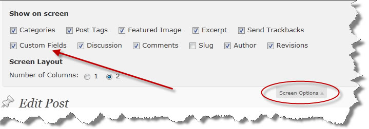
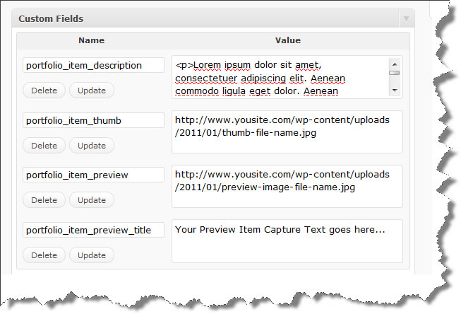
Note: The Custom Fields' names are case-sensitive.
To pull all images attached to a single post to be added to the portfolio you will need to use the following two custom fields:
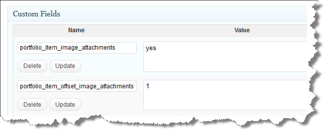
Use the custom field portfolio_item_image_attachments with value 'yes' (without the quote). Optionally you can offset the number of images to be pulled from the post by specifying the custom field portfolio_item_offset_image_attachments and specify any number as value. Optionally you can disable the linking of Portfolio page items when opened with prettyPhoto lightbox, the option for this is located under the theme's "Portfolio Section":
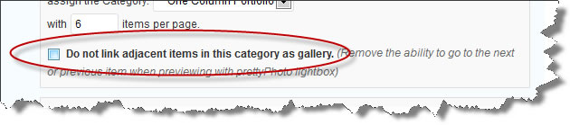
The Post's title could be positioned either above or below each thumb. This is convenient in case that you have really long titles which could push the thumb image down a bit and misalign the thumbs horizontally. In this case the solution would be to place the titles below the thumbs.
You could also add a "Read More" button or list styles from the theme's typography by using shortcodes or plain HTML.
New with v1.8.0 - Sortable Portfolio Custom Fields
v1.8.0 of "U-Design" theme brings a new level of functionality to the Portfolio section. To use these new sortable portfolio functions, please choose the appropriate Page Template configuration. For example, if you would like the 1 Column, Sortable, select accordingly from the Page Attributes:

Then, add to that page the custom field sort functions you would like:
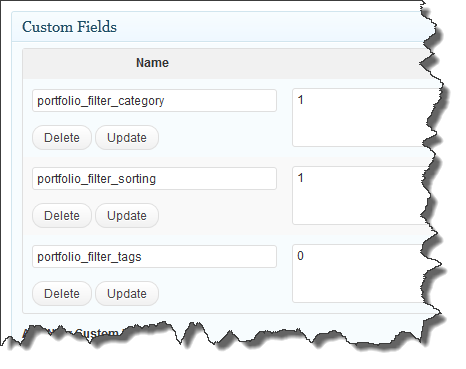
- portfolio_filter_category (adds the ability to sort by "child" category, possible values: '0' or '1' without the quotes)
- portfolio_filter_sorting (adds the ability to sort by Alphabetical and Ascending/Descending order, possible values: '0' or '1' without the quotes)
- portfolio_filter_tags (adds the ability to sort by Tags used in the Portfolio posts, possible values: '0' or '1' without the quotes)
All three portfolio filter custom fields have the option to be set to either 0 (zero - off) or 1 (one - on). If a custom field is not present, this will be interpreted as 1 (one - on). These custom fields can only be used with a Sortable Portfolio Page (meaning a page that's been assigned a Sortable Portfolio Page template as discussed above) - they cannot be used with the individual posts that make up the Portfolio content. These custom fields are also independent of each other, meaning you don't have to add all three, you can only add the one you need. Their main purpose is to be used to disable or remove a filter or the sorting functionality from the page they are used on.
NOTE: If you are using WPML, please remember to add the three above mentioned custom fields in each of of the applicable language pages of that Portfolio.
Once you have completed the Page setup, assign the Page to the Portfolio theme section as per the standard Portfolio setup instructions.
The Posts used to hold each individual Portfolio item have a sidebar when viewed in the browser as posts. The sidebar displayed could be changed to be either left or right side position. You can set the position from the U-Design --> Portfolio Section. Also the sidebar could be customized further by adding various widgets to it from Appearance --> Widgets and drag-and-drop widgets into the "PortfolioSidebar" widget area like so:
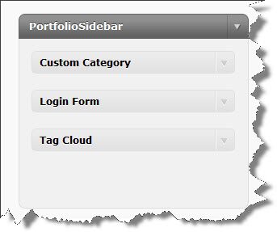
Back to the U-Design --> Portfolio Section. As shown in the image below in this section the postmetadata, author name and the comment area could be excluded from the single view post:
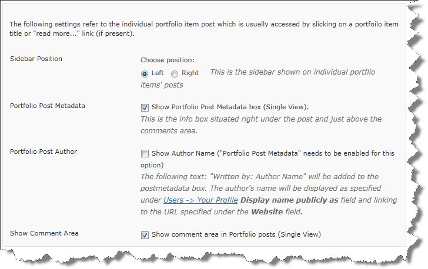
G) Blog/News Section - top
To setup a Blog or News Section, create a Page called Blog or News or whatever you would like to call it, give it just a title and no content, and assign the template "Blog page" to it like so:
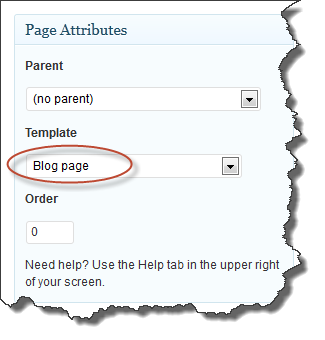
You can also change the sidebar position for the Blog pages to be either left or right. You can do that from the U-Design --> Blog Section
To customize the Blog pages' sidebar, go to Appearance -> Widgets and drag-and-drop widgets you'd like to use into the "BlogSidebar" widget area, here's an example:
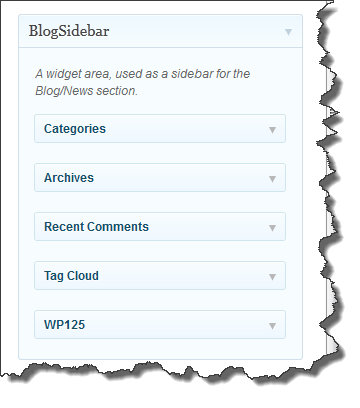
By default the blog posts displayed under the Blog section will exclude all posts that are in some way related to any of Portfolio section(s). If you would like to include them uncheck the "Exclude Portfolio(s) from Blog" option.
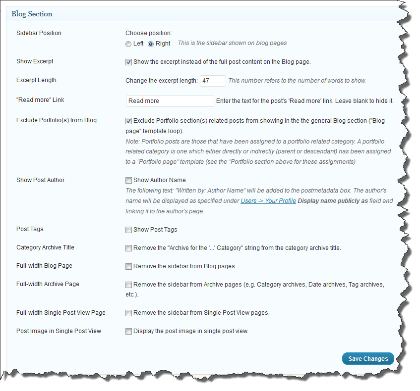
By default the Blog section will display the posts with short excerpts and a "Read more" button. However to show regular post content (not the excerpt) uncheck the checkbox "Show Excerpt" shown in the image above to accomplish this. To display a post with an image on the Blog page you need to add a Post specific image. Use the Custom Field post_image (case-sensitive) to specify the url to the image (see below for example). For best results you might want to upload a larger image. The theme will crop and resize the image to 570px by 172px (width by height). Here's an example of a post with custom excerpt and a post image. You don't have to fill in the "Excerpt" field, if you leave it empty the theme will automatically generate the excerpt for you:
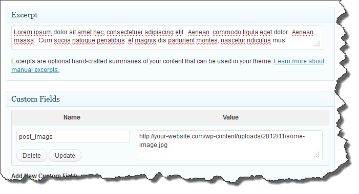
Alternatively, another way to display an image representing each post in the Blog page is by enabling the "Featured Image", please refer to the screenshot below. Of course using this feature assumes that you have setup an image as "Featured Image" in a post. The advantage of this method is that you could easily resize the images as well as set their alignment (left, center, or right).
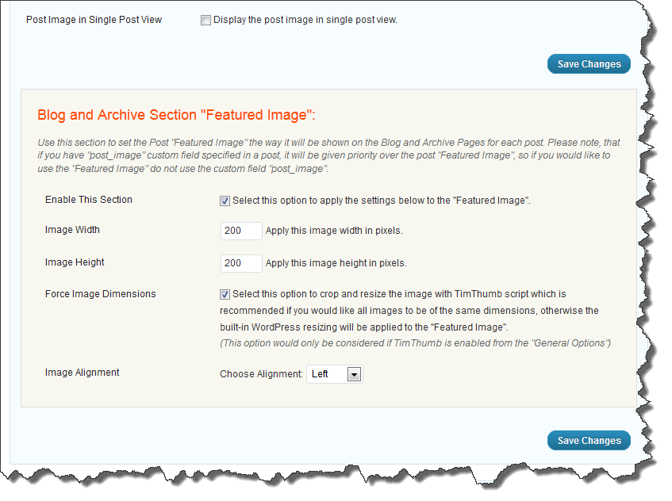
H) Contact Page - top
To setup a Contact page, create a Page called Contact and assign the template to it called "Contact page":
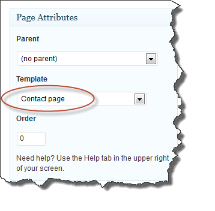
The content you enter under the Contact page will always show first in the page.
You can setup business contact information under U-Design Options --> Contact Page, that will be displayed in a table-like nicely formatted way, the configuration for that and other options could be seen here:
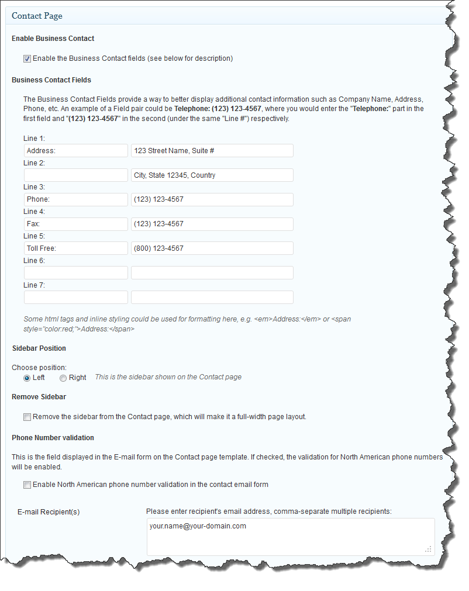
The bottom part of the Contact Page Options allows you to enable ReCAPTCHA for extra security. To use reCAPTCHA you must get an API public and private key from http://recaptcha.net/. For the rest follow the instructions on the screen:
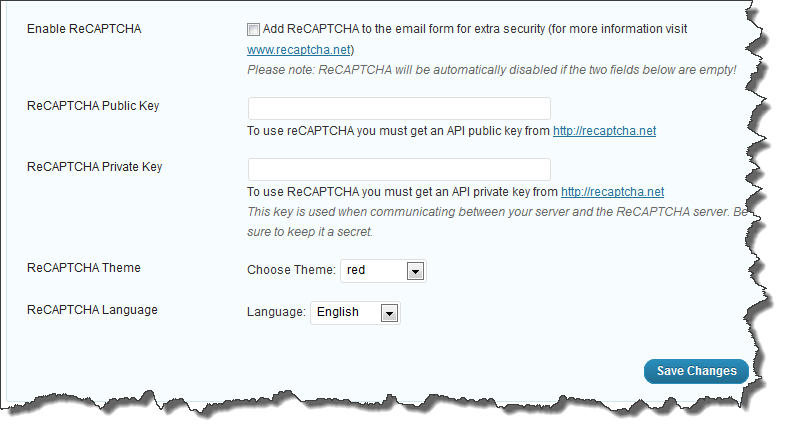
For more information on how ReCAPTCHA works please visit http://recaptcha.net/
The Contact Page template comes with its own sidebar called ContactSidebar. To add Google Maps in the sidebar use the U-Design: Google Map widget. This widget displays a location map without the need to have a Google API Key.
Go to: http://maps.google.com/ (or the Google Maps site appropriate for your locale) and enter in the address location you would like the map centered on. You will see a hyperlink icon (labeled "1" in the screenshot below) near the Google Map. Click on this link:
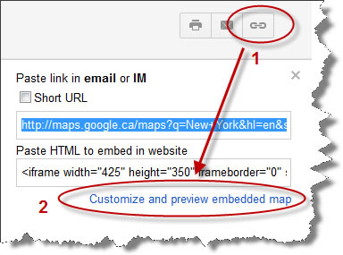
Then, click "Customize and preview embedded map" (labeled "2" in the screenshot above). Click on Custom. Now set the width to a maximum of 280. The height could be as long as you like.
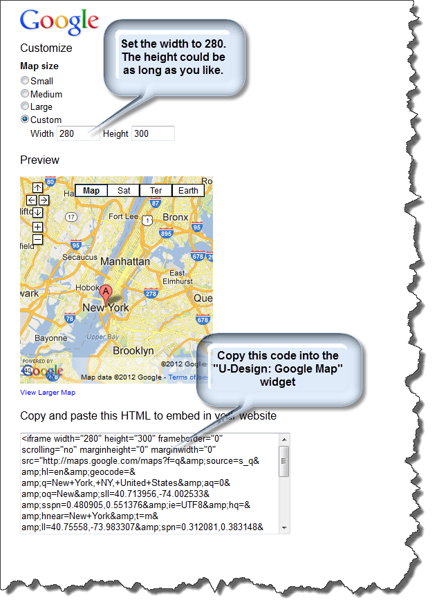
Then get the code and paste it into the U-Design: Google Map widget:
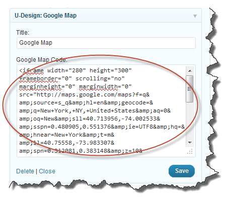
I) CSS Files and Structure - top
This theme has been implemented as a fixed width layout with the 960 Grid System. The full width of the template is 960px. For more information as to how the 960 Grid works, visit the 960 Grid System website.
All CSS files are located in the <themes-directory>u-design/styles/ subdirectory. The css files are registered and included in the <head> via my_init_styles() function located in the functions.php.
All JavaScript are registered and included in the <head> via my_init_scripts() function located in the functions.php.
The directory common-css/ and common-images/ stores all the css and images that apply to all styles and colors. Most of the 960 Grid System css files are in that directory.
J) Additional Information - top
More information, examples, code, shortcodes, etc. could be found at the U-Design demo site.
- Full-width Page Template: 920px of usable space
- A Page or Post with Sidebar: 600px of usable space in the content area + 280px in the sidebar
- "one_fourth" Column: 200px of usable space
- "one_third" Column: 276px of usable space
- "one_half" Column: 440px of usable space
- "two_third" Column: 598px of usable space
- "three_fourth" Column: 680px of usable space
- One and Two Column: 410px x 220px (width by height)
- Three Column: 248px x 148px (width by height)
- Four Column: 176px x 116px (width by height)
Typography and Shortcodes examples could be found under the Features menu on the demo site.
If you have any further questions, please don't hesitate to ask at the theme's Support Forum. You should be able to register yourself with the Support Forum HERE.
For "U-Design: Recent Posts" Widget Usage Instructions please refer to THIS discussion in the support forum.
On how to setup the 'Top Area Social Media' Widget Area, please refer to THIS discussion in the support forum.
K) PSD Files - top
In the PSD_files.zip I've included subdirectories containing all the PSDs necessary to produce the corresponding theme styles.
All PSD files contain slices of the required images. In Photoshop you just have to go File --> Save for Web & Devices... select the slices you'd like to generate (Shift+click to select multiple slices), hit "Save", at the next "Save Optimized As" dialog box under Slices dropdown select "Selected Slices" and "Save".
L) Font Settings & Custom Colors - top
Choosing fonts for your website using the U-Design theme is rather intuitive. I've added Google fonts as an alternative to Cufón fonts. One of the advantages of using Google fonts is that the actual fonts are served from an online directory the first time the users browser requests them and then cached locally. This eliminates the requirement to have the fonts available on the user's machine in the first place. Another advantage of Google fonts is that they are not JavaScript dependent and they are selectable as opposed to non-selectable for Cufón fonts. As new fonts are being added by Google to the online directory I will be updating the theme's list of fonts over time.
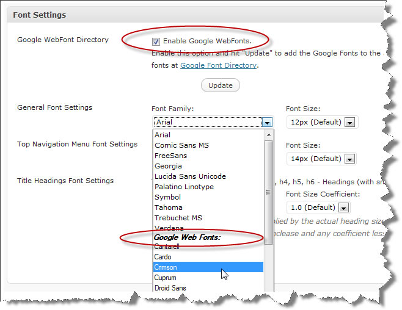
The Custom Colors is a very powerful feature of the U-Design theme. It allows you to customize the colors of all elements from backgrounds, links, text and menu links by section. Many of the theme's elements are designed with certain opacity so that no matter what color the background they will stay visible.
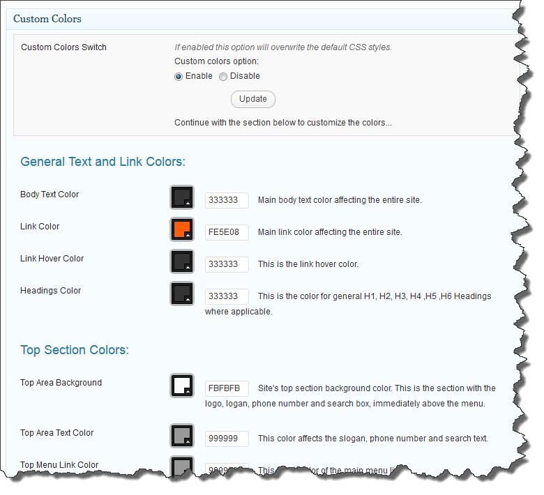
You can also upload images as backgrounds on per section bases to replace solid background colour:
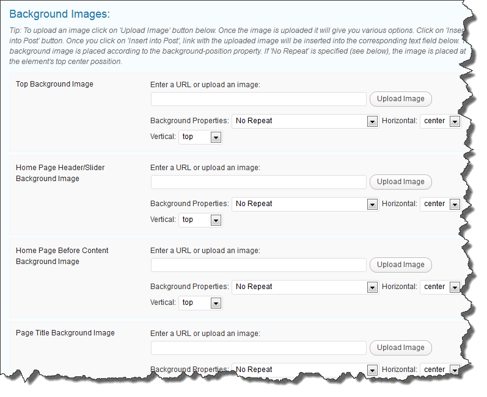
In addition, you will be able to save your custom color schemes (including any background images) that you create for future use, especially if you like to experiment with colors or like to change the look and feel of your site frequently..
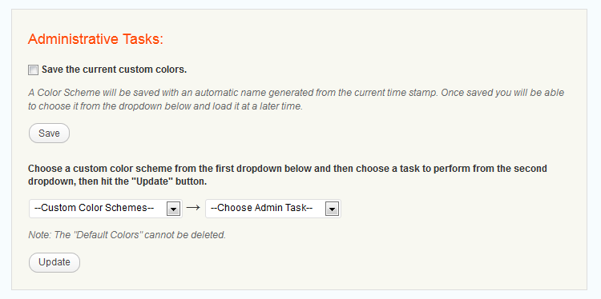
M) List of All Custom Fields Available with the Theme - top
Page Width related custom fields:- udesign_custom_page_width (this custom fields allows you to overwrite the global theme width to a custom one. Works for width greater than 960px, example value: '1060' or '1200' without the quotes)
- udesign_custom_sidebar_width (this custom fields allows you to overwrite the global sidebar width to a custom one. The values are in percentage, but you don't need to add the "%" sign after the number, example value: '33' or '27' without the quotes):
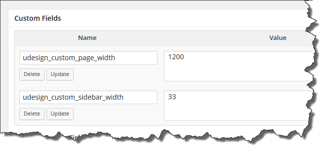 - udesign_max_page_width (set this particular page width to maximum width 'fluid' layout. Works for width greater than 960px, , example value: 'yes' or 'no' without the quotes):
The 'udesign_max_page_width' custom field can also be used in combination with the 'udesign_custom_sidebar_width' to specify the desired sidebar width.
- udesign_add_slider_revolution (use this custom field if you would like to display Revolution slider on a Page or Post. The slider will not be defined within the width of the theme (same way as it's displayed on the front page). It will display beneath the main menu and above the title section. As value provide the slider's shortcode, example "[rev_slider slider1]" without the quotes):
- portfolio_item_thumb (this is the item's thumbnail image)
- portfolio_item_thumb_crop_align (this option can be used for the thumbnail image positional cropping or alignment of the cropping), possible values:

Note: To skip image cropping at any time add the query string parameternocropand processing will be ignored, returning the original URL. Example: - portfolio_item_thumb_retina (use this option to enable automatic retina for the thumbnail image. A double pixel ratio will be used for the cropped image, example value: 'yes' without the quotes, or 'no')
- portfolio_item_preview (this is the item preview - it could be an image, video or a flash file)
- portfolio_item_description (this is the item description text)
- portfolio_item_preview_title (this is the item capture text shown underneath the preview item)
- portfolio_item_link (which allows to link directly from the thumbnail to another page or site rather than displaying a preview image)
- portfolio_item_link_target (use this custom field to open the link in a new window, for that set the value field to "_blank" without the quotes)
- portfolio_item_link_rel (use this custom field to specify a link relation attribute "rel" for Portfolio thumbnails, example value: "nofollow" without the quotes)
- portfolio_item_image_attachments (use this option to pull all the images attached to a single post to the Portfolio, example value: 'yes' without the quotes)
- portfolio_item_offset_image_attachments (use this to skip the number specified of image attachments, example value: '0' or '1' without the quotes)
- portfolio_filter_category - Sortable Portfolio Only (adds the ability to sort by "child" category, possible values: '0' or '1' without the quotes)
- portfolio_filter_sorting - Sortable Portfolio Only (adds the ability to sort by Alphabetical and Ascending/Descending order, possible values: '0' or '1' without the quotes)
- portfolio_filter_tags - Sortable Portfolio Only (adds the ability to sort by Tags used in the Portfolio posts, possible values: '0' or '1' without the quotes)
- post_image (an alternative to "Featured Image", this custom field can be used to specify the image to be used in posts when displayed in a Blog page)
- post_thumbnail (you may use this custom field to specify explicitly which image to be used for the thumbnail image)
- thumbnail (you may use this custom field to specify explicitly which image to be used for the thumbnail image)
- udesign_title_description (this custom field can be used to add a title description next to a page or post title):
N) Responsive Layout - top
Responsive layout has been made an option for the "U-Design" theme since version 2.0.0. This feature, is optional and you may enable it under the theme's "Responsive Layout" section:
Most of the options that you will find under the theme's "Responsive Layout" section are pretty much self explanatory and I have tried to provide as much information as possible in the options themselves.
One thing I would like to mention is a CSS class that could be used with regular images in your content if you would like those images to be resized to 100% width for Breakpoints 2 and 3.
The class is called .responsive-max-width and it will work for regular images only and not the ones with image frames. Example usages:
<img class="responsive-max-width" src="http://image goes here.jpg" alt="Sample Image" />
Another important point is to pay attention to your own content, try to avoid defining fixed widths in pixels but rather use percentages where applicable. Which would be more inline with responsive layout and these elements will be able to resize automatically to adjust to the size of the browser window or the type of device being used. For additional information or if you would like to ask a question about responsive layout please refer to the theme's support forum. You may subscribe to the Support Forum HERE.
O) WooCommerce Integration with U-Design - top
The Compatibility of the "U-Design" with "WooCommerce eCommerce WordPress plugin" is ensured through the "U-Design - WooCommerce Integration" plugin. The plugin is offered through the theme to install (Recommended Plugins), however you could also obtain a copy of it at any time as well as additional information from the theme's support forum HERE. If you haven't done that already, you may subscribe to the Support Forum HERE.
Please note that the version of the plugin in the support forum might be more up to date than the one shipped with the theme, this is because theme updates are not as frequent as this plugin's, So make sure to check with the forum for latest updates once in a while.
P) Sources and Credits - top
I've used the following images, icons, fonts or other files as listed.
- jQuery JavaScript Library by John Resig
- Knob Buttons Toolbar icons by iTweek
- Quartz Icon Pack by Andy Gongea
- Fugue Icons by Yusuke Kamiyamane
- realistiK Reloaded by Pavel InFeRnODeMoN
- Cufon Font Types by Simo Kinnunen
- Piecemaker Slider by Björn Crüger
- Flashno 224 grid slider by flashmo.com
- Cycle jQuery plugin by M. Alsup
- Color picker by Stefan Petre
- SWFObject by Geoff Stearns
- TableDnD plug-in for JQuery by Denis Howlett
- mr-image-resize script created by Ernesto Méndez and Matthew Ruddy
- Simple Breadcrumb by Christian "Kriesi" Budschedl
- DD_belatedPNG by Drew Diller
- CoolInput Plugin by Alex Weber and Evan Winslow
- Superfish menu by Joel Birch
- SelectNav.js select drop-down menu by Łukasz Fiszer
- jQuery meanMenu a responsive menu by Chris Wharton
- Respond min/max-width media query polyfill by Scott Jehl
- Search Excerpt by Scott Yang
- Masked Input plugin for jQuery by Josh Bush
- flickrRSS WordPress plugin by Dave Kellam and Stefano Verna
- jQuery validation plug-in by Jörn Zaefferer
- ReCAPTCHA by Mike Crawford and Mike Crawford
- Update Notifier script by João Araújo
- Isotope jQuery plugin by David DeSandro / Metafizzy LLC
- Slider Revolution Responsive WordPress Plugin by themepunch
- WPBakery Visual Composer: Page Builder for WordPress Plugin by mixey (WPBakery)
- TGM Plugin Activation by Thomas Griffin and Gary Jones
Fonts used:
- Sniglet font by Haley Fiege
- Yorkville font by humanabase
- Qlassik font by Dimitri Castrique
- Aubrey font by Criselda Caecilia Titus
- Bebas font by Bagel & Co.
- Oregon LDO font by Luke Owens
- Comfortaa font by Johan Aakerlund
- Blue Highway font by Typodermic Fonts
- Geo Sans Light font by Manfred Klein
- Sansation font by Bernd Montag
- Diavlo font by Jos Buivenga
- Tertre font by Jan Schmoeger
- Eurofurence Font Type by Tobias Benjamin Köhler
- Waukegan LDO font by Luke Owens
Thank you so much for choosing the "U-Design" theme and I hope you will enjoy using it!! :)
Andon